Microbiology research · In progress
Isolating Microbes from a PHB-Degrading Community
Separating the members of an 8-microbe community that breaks down a biodegradable plastic without oxygen, so each one can be studied on its own.
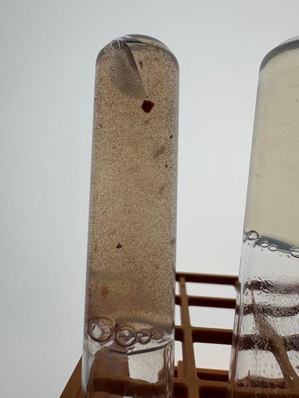
Overview
PHB is a biodegradable plastic made by bacteria. Our lab works with an established community of 8 microbes that degrades PHB in an oxygen-free environment. The community works as a group, so it’s hard to tell which member does what. The goal of this project is to separate the individual microbes, try to grow them on their own, and see whether that’s feasible for later experiments.
What I did
- Serial dilution in agar. I set up two series of 7 tubes. Each tube holds 3 mL of agar and 6 mL of growth media, and the first tube also gets 1 mL of the original community. Each following tube gets 1 mL from the previous tube, so each one is more dilute and the microbes spread out far enough to grow as separate colonies. One series is fed PHB powder and the other acetate, giving 14 cultures in total.
- Weekly monitoring. Every week since 10/15, we photographed all 14 tubes and logged growth, color changes, and signs of contamination in a shared sheet.
- Literature research. I researched how microbes break down PHB without oxygen, and compared two organisms from the community, Koribacter and Terracidiphilus.
Growth over 5 weeks
At the start, only the first and most concentrated tube in each series had a slight pink tinge, and the rest looked like plain agar. Over the following weeks, growth appeared across more of the tubes.
PHB powder series
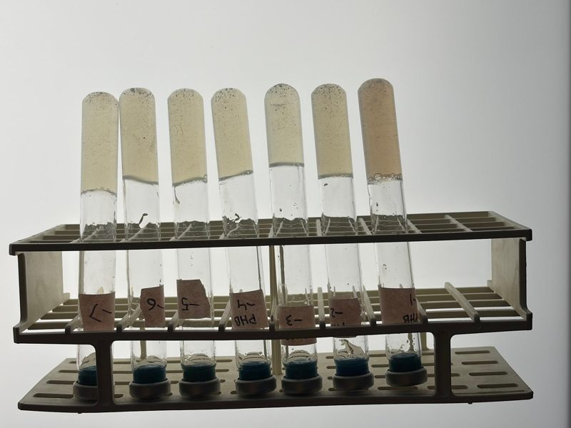
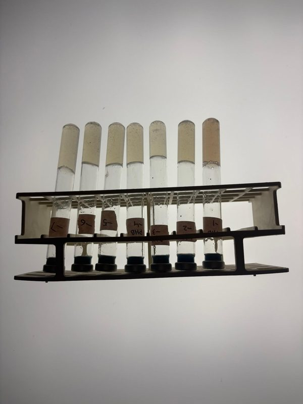
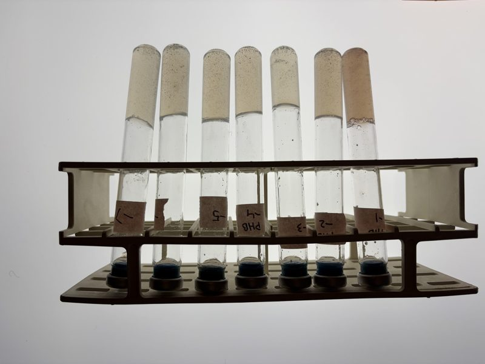
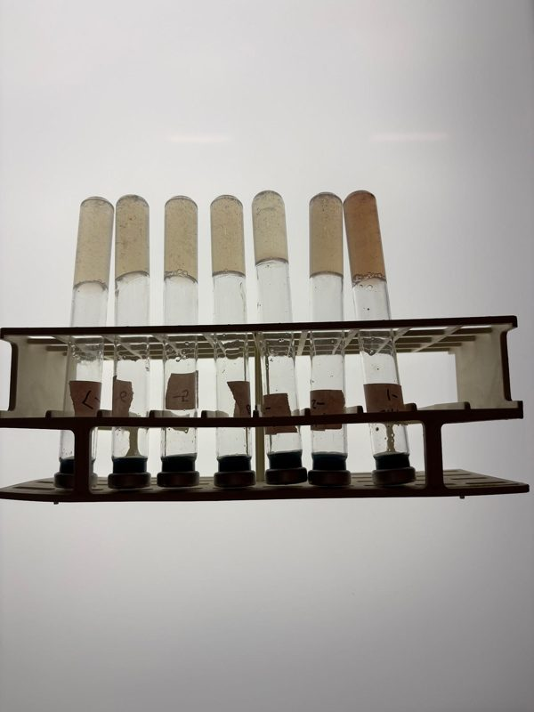
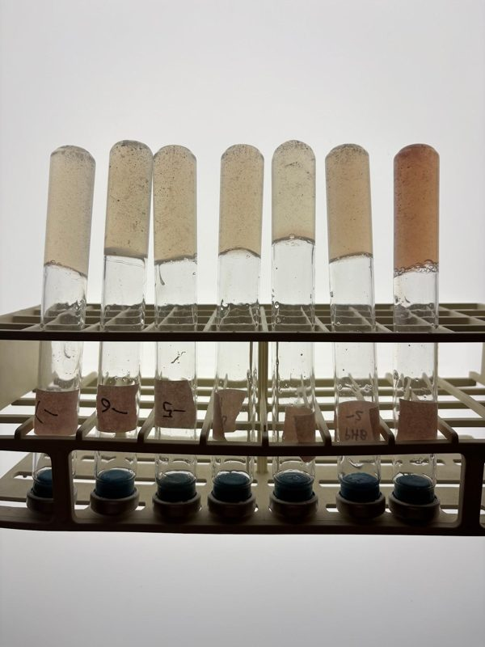
Acetate series
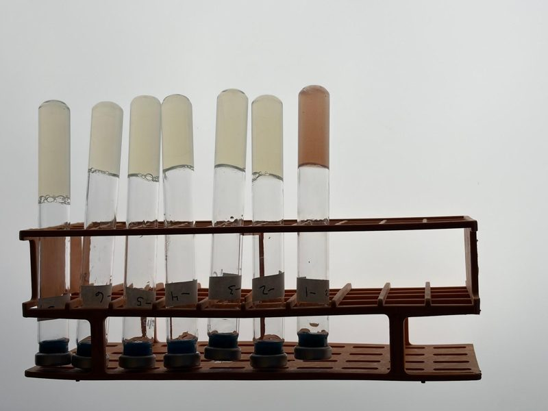
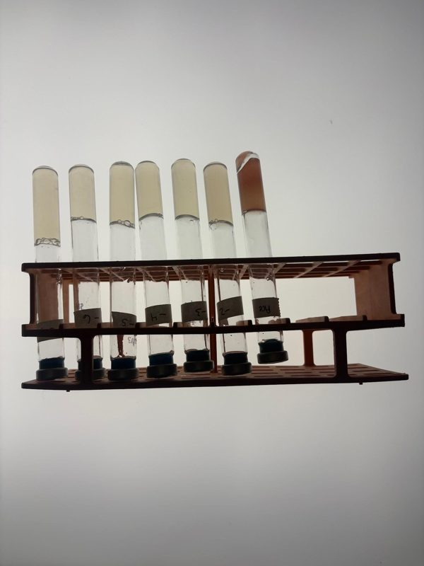
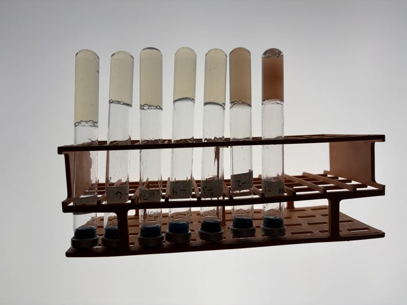
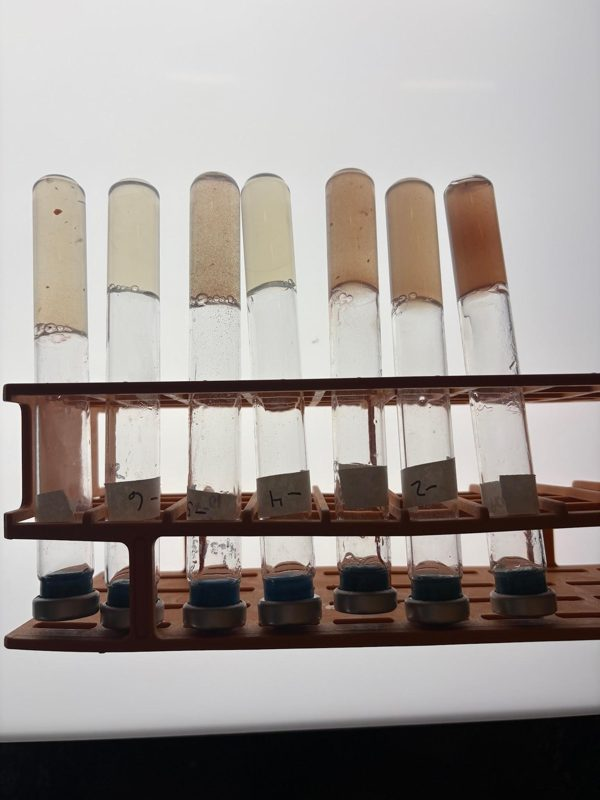
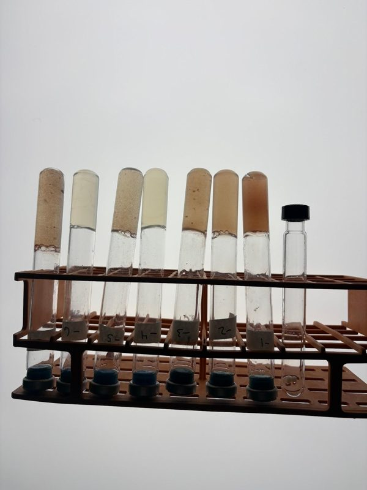
Results so far
By 11/12, the most dilute acetate tube (10⁷) showed a burst of growth with one large colony. The PHB powder tube at 10⁶ had small, flake-like colonies, which is a different look from the acetate cultures.
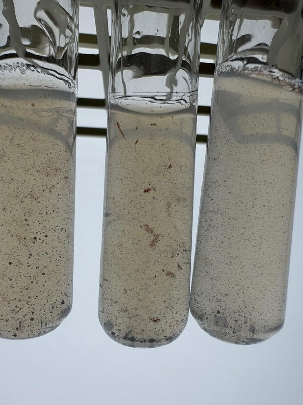
These colonies look separated, but that doesn’t prove each one is a single species. A visibly isolated colony isn’t the same as a confirmed pure culture, so we haven’t confirmed any isolates yet.
How microbes break down PHB without oxygen
This is the pathway I mapped in my literature notes:
- Colonization. Microbes attach to the PHB surface and form a biofilm.
- Hydrolysis. They release PHB depolymerase enzymes, which use water to cut the plastic into small pieces and single 3-hydroxybutyrate units that dissolve in water.
- Conversion to acetyl-CoA. 3-hydroxybutyrate becomes acetoacetate, then acetoacetyl-CoA, then two molecules of acetyl-CoA.
- Fermentation. Without oxygen, acetyl-CoA can’t enter the Krebs cycle, so bacteria ferment it into volatile fatty acids, mostly acetate, plus hydrogen and CO2.
- Methanogenesis. Archaea turn the acetate, or the hydrogen and CO2, into methane.
Two community members: Koribacter and Terracidiphilus
Both are Gram-negative soil bacteria that mostly live with oxygen. Terracidiphilus has been reported to grow on complex plant polymers like cellulose, hemicellulose, and chitin, so it is a heavy-duty carbon processor. Koribacter looks different in our data: it doesn’t have the usual PTA–ACK pathway for converting acetyl-CoA to acetate, and instead has the genes acdA and acs. That suggests it may both make acetate and take it back up, depending on conditions.
Next steps
- Repeat isolation for samples that didn’t give distinguishable colonies
- Verify the identity and purity of each isolate
- Compare growth characteristics between isolates
- Test whether the isolates can be maintained on their own